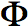

On this page, we'll explain the meaning of the 3rd of Maxwell's Equations, Faraday's Law, which is given in Equation [1]:
| [Equation 1] |
|---|
Faraday was a scientist experimenting with circuits and magnetic coils way back in the 1830s. His experiment setup, which led to Farday's Law, is shown in Figure 1:
Figure 1. Experimental Setup For Faraday.
The experiment itself is somewhat simple. When the battery is disconnected, we have no electric current flowing through the wire. Hence there is no magnetic flux induced within the Iron (Magnetic Core). The Iron is like a highway for Magnetic Fields - they flow very easily through magnetic material. So the purpose of the core is to create a path for the Magnetic Flux to flow.
When the switch is closed, the electric current will flow within the wire attached to the battery. When this current flows, it has an associated magnetic field (or magnetic flux) with it. When the wire wraps around the left side of the magnetic core (as shown in Figure 1), a magnetic field (magnetic flux) is induced within the core. This flux travels around the core. So the Magnetic Flux produced by the wired coil on the left exists within the wired coil on the right, which is connected to the ammeter.
Now, a funny thing happens, which Faraday observed. When he closed the switch, then current would begin flowing and the ammeter would spike one way (say measuring +10 Amps on the other side). But this was very brief, and the current on the right coil would go to zero. When the switch was opened, the measured current would spike to the other side (say -10 Amps would be measured), and then the measured current on the right side would again be zero.
Faraday figured out what was happening. When the switch was initially changed from open to closed, the magnetic flux within the magnetic core increased from zero to some maximum number (which was a constant value, versus time). When the flux was increasing, there existed an induced current on the opposite side.
Similarly, when the switch was opened, the magnetic flux in the core would decrease from it's constant value back to zero. Hence, a decreasing flux within the core induced an opposite current on the right side.
Faraday figured out that a changing Magnetic Flux within a circuit (or closed loop of wire) produced an induced EMF, or voltage within the circuit. He wrote this as:
| [Equation 2] |
|---|
In Equation [2],  is the Magnetic Flux within a circuit, and EMF is the electro-motive force, which is basically a voltage source. Equation [2] then says that the induced voltage in a circuit is the opposite of the time-rate-of-change of the magnetic flux. For more information on derivatives, see the partial derivatives page.
Deriving Faraday's Law
Now after the experiment in Figure 1, we have the experimental result of Equation [2],
how do we go from this result to the standard form of Farday's Law in Equation [1]?
Well, I'm glad you asked. Let's imagine a simple loop, with a time varying B
We know that the rate of change of the total magnetic flux is equal
to the opposite of the EMF, or the electric force within the wire.
The total magnetic flux is simply the integral (or sum) of the
field over the area enclosed by the wire: field within it: Equation3:
Figure 1. A Loop of Wire, With a Magnetic Flux Density B(t) within it.
We know that the rate of change of the total magnetic flux is equal to the opposite of the EMF, or the electric force within the wire. The total magnetic flux is simply the integral (or sum) of the B field over the area enclosed by the wire:
| [Equation 3] |
|---|
To find the total EMF induced around the whole circuit, we sum up over the length of the wire the EMF produced at each point. This is known as a line integral. This is written as:
| [Equation 4] |
|---|
Now, recall that the Electric Field is directly related to force from electric charges. And Voltage is also defined as the sum (integral) of the Electric Field across a path [recall that the E-field is measured in Volts/meter]. Hence, the E-field is actually the spatial-derivative of voltage (E-field is equal to the rate of change of the voltage with respect to distance). These facts are summed up in the following:
| [Equation 5] |
|---|
Hence, Equations [4] and [5] tell us that the differential amount of EMF at any point along the circuit (dEMF in [4]) is equal to the E field at that location. Therefore:
| [Equation 6] |
|---|
Now, some mathematician named Stokes figured out that integrating (averaging) of a field around a loop is exactly equivalent to integrating the curl of the field within the loop. This should have somewhat of an intuitive truth to you: the curl is the measure of the rotation of a field, so the curl of a vector field within a surface should be related to the integral of a field around a loop that encloses the surface. If it doesn't make sense, think about it more or just accept the following as truth (because it is true - not just for E fields but for any field):
| [Equation 7] |
|---|
Now we are almost there. If we replace Farday's Law of Equation [2], with the terms we found in Equation [3] and Equation [7], then we get:
| [Equation 8] |
|---|
In Equation [8], we note that if we have two integrals over surfaces, and the surfaces can be however we choose, then the quantities we integrate must also be the same. And this is how we obtained Faraday's Law in final form, as listed on Maxwell's Equations!